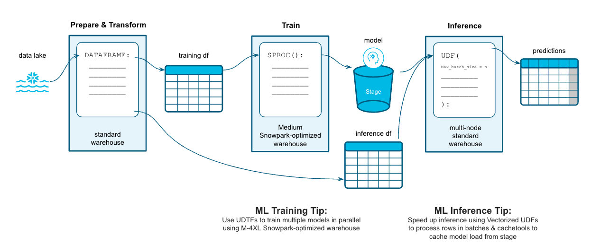

Python is the language of choice for Data Science and Machine Learning workloads. Snowflake has long supported Python via the Python Connector, allowing data scientists to interact with data stored in Snowflake from their preferred Python environment. This did, however, require data scientists to write verbose SQL queries. To provide a more friendly, expressive, and extensible interface to Snowflake, we built Snowpark Python, a native Python experience with a pandas and PySpark-like API for data manipulation. This includes a client-side API to allow users to write Python code in a Spark-like API without the need to write verbose SQL. Python UDF and Stored Procedure support also provides more general additional capabilities for compute pushdown.
Snowpark includes client-side APIs and server-side runtimes that extends Snowflake to popular programming languages including Scala, Java, and Python. Ultimately, this offering provides a richer set of tools for Snowflake users (e.g. Python's extensibility and expressiveness) while still leveraging all of Snowflake's core features, and the underlying power of SQL, and provides a clear path to production for machine learning products and workflows.
A key component of Snowpark for Python is that you can "Bring Your Own IDE"- anywhere that you can run a Python kernel, you can run client-side Snowpark Python. You can use it in your code development the exact same way as any other Python library or module. In this quickstart, we will be using Jupyter Notebooks, but you could easily replace Jupyter with any IDE of your choosing.
Throughout this quickstart, we will specifically explore the power of the Snowpark Python Dataframe API, as well as server-side Python runtime capabilities, and how Snowpark Python can enable and accelerate end-to-end Machine Learning workflows.
The source code for this quickstart is available on GitHub.
You will build an end-to-end data science workflow leveraging Snowpark for Python
The end-to-end workflow will look like this:

You are part of a team of data engineers and data scientists at a banking company that has been tasked to identify high-risk customers using a machine learning based solution. The goal is to give a recommendation to either approve or reject the issueing of a credit card.
To build this, you have access to customer demographic and credit history data. Using Snowpark, we will ingest, analyze and transform this data to train a model that will then be deployed inside Snowflake to score new data.
The dataset you are using is part of a Kaggle competition that can be found here:
Kaggle: Credit Card Approval Prediction
Let's set up the Python environment necessary to run this quickstart:
First, clone the source code for this repo to your local environment:
git clone https://github.com/Snowflake-Labs/sfguide-getting-started-machine-learning.git
cd sfguide-getting-started-machine-learning/
If you are using Anaconda on your local machine, create a conda env for this quickstart:
conda env create -f conda_env.yml
conda activate pysnowpark
Conda will automatically install snowflake-snowpark-python and all other dependencies for you.
Now, launch Jupyter Notebook on your local machine:
jupyter notebook
If you decide to bring your own Python environment, please make sure to have the following packages installed:
What You'll Do:
First of all, locate the following information:
You'll need these values to connect to your Snowflake Account via Snowpark.
After that, open up the 0_setup_environment Jupyter notebook and run each of the cells to setup your Snowflake Account and load the required datasets into Snowflake.
What You'll Do:
Open up the 1_1_DEMO_basic_data_exploration_transformation Jupyter notebook and run each of the cells.
What You'll Do:
Open up the 1_2_EXERCISE_basic_data_exploration_transformation Jupyter notebook and develop/adjust the code to solve the tasks.
You can verify your excercise results by having a look at the solution provided in the 1_2_SOLUTION_basic_data_exploration_transformation Jupyter notebook.
What You'll Do:
Open up the 1_3_DEMO_full_data_exploration_transformation Jupyter notebook and run each of the cells.
What You'll Do:
Open up the 2_1_DEMO_model_building_scoring Jupyter notebook and run each of the cells.
What You'll Do:
Open up the 3_1_DEMO_vectorized_cached_scoring Jupyter notebook and run each of the cells.
What You'll Do:
For XGBoost:
Open up the 4_1_EXERCISE_additional_models_xgboost Jupyter notebook and develop/adjust the code to solve the tasks.
For LightGBM:
Open up the 4_2_EXERCISE_additional_models_lightgbm Jupyter notebook and develop/adjust the code to solve the tasks.
For XGBoost:
You can verify your excercise results by having a look at the solution provided in the 4_1_SOLUTION_additional_models_xgboost Jupyter notebook.
For LightGBM:
You can verify your excercise results by having a look at the solution provided in the 4_2_SOLUTION_additional_models_lightgbm Jupyter notebook.
What You'll Do:
Open up the 5_1_DEMO_hyperparameter_tuning_optuna Jupyter notebook and run each of the cells.
Through this Quickstart we were able to experience how Snowpark for Python enables you to use familiar syntax and constructs to process data where it lives with Snowflake's elastic, scalable and secure engine, accelerating the path to production for data pipelines and ML workflows. Here's what you were able to complete:
For more information on Snowpark Python, and Machine Learning in Snowflake, check out the following resources: